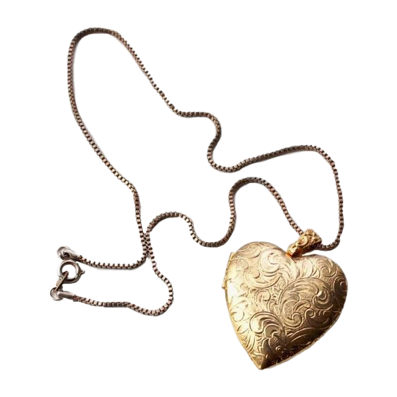

LookatMyJewelery!
...and why should I?
Jewelery reveals a lot about someone — particularly their personality.
What makes you happy? Angry? Reminiscent?
Analyzing one’s studs can reveal a lot about them, their design philosophy,
and the mundane details in their life that could easily relate to another person.
Personality
Mem

ries
Speaking of reminiscence, what memories or nostalgia does
your jewellery evoke? Does it evoke any particular emotion?
a life lesson? What does it reflect about you?
Ny
Harper
Kayla
Maybe you just like your trinkets because you just do — but that
can still provide plenty of self-analysis as to what you
love (or hate!) in your life.
Go take a peek at others’ collections!